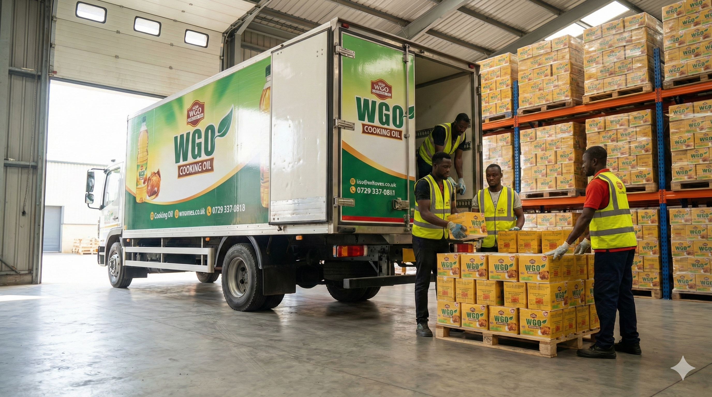

With God Delight is a Nigerian-based manufacturer and producer of high-quality edible cooking oils, committed to delivering safe, healthy, and reliable oil solutions for households, food vendors, restaurants, and commercial users across Nigeria.
Driven by excellence and guided by integrity, With God Delight specializes in the production of premium vegetable oil products, including WGO Soya Oil and WGO Refined Palm Olein. Our oils are carefully refined using modern processing methods that meet approved quality and hygiene standards, ensuring consistent freshness, purity, and performance in everyday cooking and frying.
At With God Delight, we place strong emphasis on quality control at every stage of production. From sourcing of raw materials to refining, packaging, and final output, our processes are designed to eliminate adulteration and ensure that consumers receive safe, hygienically produced cooking oil they can trust.
We believe that healthy cooking should be accessible to everyone. That is why our products are manufactured in a wide range of convenient pack sizes — 1L, 2L, 3L, 5L, and 25L, with smaller sizes packaged in cartons — to meet the needs of families, food businesses, and large-scale commercial users.
Our commitment goes beyond production. With God Delight is dedicated to supporting healthier lifestyles, improving food quality, and contributing to the growth of the Nigerian food industry by producing cooking oils that deliver value, reliability, and peace of mind.
With God Delight — producing quality, purity, and value you can rely on.
Our Vision
To become a leading and trusted edible oil Producing brand in Nigeria, recognized for producing high-quality, safe, and affordable cooking oils that support healthy living and meet the everyday cooking needs of households and businesses.
Our Mission
Our mission at With God Delight is to manufacture and deliver premium edible cooking oils that meet approved quality, safety, and hygiene standards while remaining accessible and affordable to consumers. We are committed to:
- Producing refined, safe, and hygienically packaged cooking oils that protect consumers from adulterated and unsafe alternatives.
- Applying modern refining and production processes that ensure consistent quality and freshness.
- Offering a wide range of pack sizes suitable for households, food vendors, restaurants, and industrial users.
- Upholding integrity, excellence, and customer satisfaction in all aspects of our operations.
- Contributing positively to healthier cooking practices and sustainable growth within the food industry.
Environmental Policy

WGO Oil is committed to responsible manufacturing practices that protect the environment and promote sustainable development across all our operations. Our operations are guided by a structured Environmental Management System designed to:
- Reduce emissions and waste generated from production activities
- Encourage responsible handling and disposal of materials
- Promote recycling and environmentally friendly packaging practices
- Ensure compliance with all applicable environmental, health, and safety regulations
WGO Oil is dedicated to protecting the health and safety of our employees, customers, host communities, and the natural environment. Through continuous improvement, innovation, and strict adherence to regulatory standards, WGO Oil remains committed to producing high-quality cooking oil while safeguarding the environment for present and future generations.
Quality Policy
WGO Oil is committed to consistently producing high-quality refined soya oil that meets and exceeds customer expectations through safe, hygienic, and efficient manufacturing processes. Our operations are guided by a structured Quality Management System designed to:
- Reduce emissions and waste generated from production activities
- Encourage responsible handling and disposal of materials
- Promote recycling and environmentally friendly packaging practices
- Ensure compliance with all applicable environmental, health, and safety regulations
At WGO Oil, quality is a shared responsibility. We actively train and engage our employees to uphold quality standards and foster a culture of continuous improvement aimed at achieving total customer satisfaction.